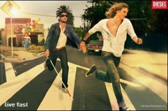

Humor and stories for interpreters: Deafblind folk
David Bar-Tzur
Links updated monthly with the help of LinkAlarm.
 he stoplight on the corner buzzes when its safe to cross the street. I was crossing with an intellectually challenged coworker of mine. She asked if I knew what the buzzer was for. I explained that it signals blind people when the light is red. Appalled, she responded, "What on earth are blind people doing driving?"
he stoplight on the corner buzzes when its safe to cross the street. I was crossing with an intellectually challenged coworker of mine. She asked if I knew what the buzzer was for. I explained that it signals blind people when the light is red. Appalled, she responded, "What on earth are blind people doing driving?"
 ne day, a guy came to the forest started chopping down a tree. He chopped for a while, then he yelled "Timber!", but the tree wouldn't fall; it just stayed there. He tried yelling timber again. Still it wouldn't fall. So he said. "Hmmm, oh, I've got an idea." He went to school and learned some sign language. He went back, tapped on the tree's bark, and fingerspelled "T-I-M-B-E-R" and finally the tree fell to the ground. You see, it was a deaf tree. It didn't work the next week, though, until he fingerspelled it by pressing each letter against its bark. That tree was deaf-blind.
ne day, a guy came to the forest started chopping down a tree. He chopped for a while, then he yelled "Timber!", but the tree wouldn't fall; it just stayed there. He tried yelling timber again. Still it wouldn't fall. So he said. "Hmmm, oh, I've got an idea." He went to school and learned some sign language. He went back, tapped on the tree's bark, and fingerspelled "T-I-M-B-E-R" and finally the tree fell to the ground. You see, it was a deaf tree. It didn't work the next week, though, until he fingerspelled it by pressing each letter against its bark. That tree was deaf-blind.
eaf-blind Beatitudes
BLESSED ARE THEY that refrain from shouting when they speak to me.
BLESSED ARE THEY that talk directly to me and not to someone else.
BLESSED ARE THEY that say who they are when entering a room and say hello to me.
BLESSED ARE THEY that say goodbye to me when they leave so I am not left speaking to the air.
BLESSED ARE THEY that do not hesitate to say "SEE" when talking to me.
BLESSED ARE THEY who tap my shoulder gently when they approach from behind or from the side when speaking to me.
BLESSED ARE THEY who wait for me to extend my hand before shaking it.
BLESSED ARE THEY who place my hand on an object such as the back of the chair when telling me where it is, so I can seat myself.
BLESSED ARE THEY who do not leave me in a strange environment without orienting me to it.
BLESSED ARE THEY who offer me their arm so they can serve as my guide, instead of grabbing, pulling or shoving me.
BLESSED ARE THEY who come up to me in a large crowd and offer to help me when I appear disoriented.
BLESSED ARE THEY who do not embarrass me in a group of people by openly referring to my blidness in word or action.
BLESSED ARE THEY who laugh with me when I tell a joke related to blindness.
BLESSED ARE THEY who read me the menu and its prices and allow me to order my own meal.
BLESSED ARE THEY who take me to the cashier so I may pay for my own meal.
BLESSED ARE THEY who do not distract my guide dog from being my active eyes.
BLESSED ARE THEY who treat me like a human being, for like it or not, I AM a human being.
- Anonymous
 or us deaf-blind people, it's a full-time job just being ourselves.
or us deaf-blind people, it's a full-time job just being ourselves.
- Anonymous
 hat to do when you meet a sighted person
hat to do when you meet a sighted person
People who use their eyes to receive information about the world are called "sighted people" or "people who are sighted." "Legal sight" means any visual acuity greater than 20/200 in the better eye without correction ort an angle of vision wider than 20 degrees. Sighted people enjoy rich full lives working, playing and raising families. The run business, hold public office and teach your children!
How do sighted people get around?
People who are sighted my walk or ride public transportation, but most choose to travel long distances by operating their own motor vehicles. They have gone through many hours of training to learn the "rules of the road" in order to further their independence. Once that road to freedom has been mastered, sighted people earn a legal classification and a "driver's license" which allows the to operate a private vehicle safely and independently.
How to assist a sighted person
Sighted people are accustomed to viewing the world in visual terms. This means that in many situations, they will not be able to communicate orally and may resort to pointing ort other gesturing. Subtle facial expression may also be used to convey feelings in social situations. Calmly alert the sighted person to his surroundings by speaking slowly, in a normal tone of voice.
Questions directed at the sighted person help focus attention back to the verbal rather than visual communication.
At times, sighted people may need help finding things, especially when operating a motor vehicle. Your advanced knowledge of routes and landmarks, particularly bumps in the road, turns and traffic lights, will assist the "driver" in finding the way quickly and easily. Your knowledge of building layouts can also assist the sighted person in navigating complex shopping malls and offices. Sighted people tend to be very proud and will not ask directly for assistance. Be gentle yet firm.
How do sighted people use computers?
The person who is sighted relies exclusively on visual information. His or her attention span fades quickly when reading long tests. Computer information is presented in a "graphical user interface" or GUI. Coordination of hands and eyes is often a problem for sighted people, so the computer mouse, a handy device that slides along the desk top, saves confusing keystrokes. With one button, the sighted person can move around his or her computer screen quickly and easily. People who are sighted are not accustomed to synthetic speech and may have great difficulty understanding even the clearest synthesizer. Be patient and prepare to explain many times how your computer equipment works.
How do sighted people read?
Sighted people read through a system called "Print." This is a series of images drawn in a tow dimensional plane. People who are sighted generally have a poorly developed sense of touch. Braille is completely foreign to the sighted person and he or she will take longer to learn the code and be severely limited by his or her existing visual senses. Sighted people cannot function well in low lighting conditions and are generally completely helpless in total darkness. Their homes are usually very brightly lit at great expense, as are businesses that cater to the sighted consumer.
How can I support a sighted person?
People who are sighted do not want your charity. They want to live, work and play along with you. The best thing you can do to support sighted people in your community is to open yourself to their world, These American are vital contributing members to society. Take a sighted person to lunch today!
- Anonymous

 y cane
y cane
Whenever I skedaddle
up stairwells
or dive down flights,
swooping past risers,
I want to touch down
on each landing standing
with my tango partner.
Whenever outside, I want her
to become a sword,
parrying lunges from poles
and challenging anything
in my way,
unafraid of ambushes
of concrete and glass.
Whenever I approach seas
of feet, I want her
to wave her slender figure,
luminous white,
for the sea before me
to part and make way
for a man possessed.
- John Lee Clark, First
appeared in Deaf-Blind American
y roommate Shelley helps me in the grocery store. Often goes and picks something up and I continue. Well, one time (actually several times) I found her only to realize I found the right color coat or hat, but not the right person! And I'm standing there signing... I'm sure I looked like an idiot.
- Betsy Wohl, The Deaf-Blind American, April-June 2004
On a related note: When you're a trifle odd, you can get away with a lot, and it makes you feel dowright sorry for ordinary folks.
- From the movie The summer of Ben Tyler
 lueberry muffins
lueberry muffins
I enjoy cooking, especially baking. One day I made some very interesting blueberry muffins. I keep both blueberries and peas in freezer bags and when making muffins just throw in the frozen berries. Have you ever noticed how much blueberries and peas feel alike? Yes - I made pea muffins.
- Carol Sue Adams, The Deaf-Blind American, April-June 2004
e careful whose car you hop into!
One day while walking home form work, a light yellow Volkswagen pulled over to pick me up. I thought to myself, "Oh goody, Larry is picking me up!" Larry was the fellow I was dating at that time. I hopped into the car and looked at the driver and said, "Hi Larry!" My jaw dropped ten feet below and I said to the driver, "I don't know you!" and started to get out of the car very quickly. The driver said to me, "No, wait a minute! I know you!" It turned out he knew me from attending the same college as I did and he had a huge crush on me. He told me that I ignored him whenever he said "Hi!" to me. (As you know I didn't ignore him; I didn't hear him!) He recognized me and pulled over to try once more to say hello to me. And that's how I met my husband!
- Lynn Jansen, The Deaf-Blind American, January-March 2004
 arth is where dhearing people live.
arth is where dhearing people live.
Eyeth is where all deaf people live.
Handth is where all deaf-blind people live.
- Rich McGann, The Deaf-Blind American, October-December 2003
orld of sound, world of sight
World of sound
World of sight
World of music
World of light
There is a lot to be seen
There is a lot to be heard
In either signed
or spoken word
The world of sound
Seems more important
Than that of sight
Music is sweet to the ear
Of one who can hear
On the world of sight
One can shed some light
There are a lot of things
That are beautiful and bright
In both worlds
there is a lot to be had
If one is rather limited
Well that's not too bad
The blind are said to be able
to see the light
But the deaf to some
don't seem very bright
Now you and I know
that this just isn't fair
Everyone should be given
an equal share
What is good for one
should be good for another
Everyone should be spirit
sister and brother
Tolerance should be
put to the test
So that for everyone there will be
nothing but the best.
- Scott Oberg, December 1976
hen I was 22 years old, I had a nice date with a hearing-sighted lady who was a Coda (child of deaf adults). She and I went to see a performance of The National Theater of the Deaf. When we got inside, we sat down and enjoyed the show. I was teasing the lady by flirting. At first, I didn't know she got up and left for some reason (I think other deaf people got her attention). When I felt her seat was empty, I thought she moved slightly from me as I knew she was teasing me, too. So I moved a little bit closer, and flirted with her. But when the light came on suddenly, I looked at the next seat and gasped - it was a guy giving me strange, startled looks. I apologized to him saying I thought it was her, but it ended up like that. He gave me wild looks and his jaw dropped. I gasped and my face turned bright red. Then the lady came back, and laughed and laughed at the way I looked!
- Rich McGann
y hand is to me what your hearing and sight together are to you. . . . All my comings and goings turn on the hand as a pivot. It is the hand that binds me to the world of men and women. The hand is my feeler with which I reach through isolation and darkness and seize every pleasure, every activity that my fingers encounter.
- Kerry Wadman
EAF MENUS AT MCDONALDS?
A DeafDigest subscriber, residing in Illinois, said he spotted a
sign at the local McDonalds, saying they have special menus for the
deaf. Curious, this subscriber who is hard of hearing, decided to give it
a try. He went to the drive in window counter and asked for a "deaf
menu." The person behind the window immediately gave him a Braille
menu! "Well," said the hard of hearing subscriber "How many Blind patrons
drive up to the take-out window?"
 ool fact
ool fact
Helen Keller (1880-1968), blind and deaf from an early age, developed her sense of smell so finely that she could identify friends by their personal odors.
 f I hear the old "nature compensates" line, one more time. . .
f I hear the old "nature compensates" line, one more time. . .
A doctor was explaining to a patient how nature sometimes compensates for a persons deficiencies. "For example," he told him, "If a man is deaf, he may have keener sight, and if a man is blind, he may have a keen sense of smell."
"I think I see what you mean," said the patient, "I've often noticed that if a man has one short leg, then the other one is always longer....."
n a visit to the library I happened to notice a man and a woman, both deaf, signing with intense gestures, apparently in a heated debate. The man said something, and the woman seemed upset. She started signing her reply very fast, to the point where the man couldn't understand a word; she also signed in big, wide gestures, which is the equivalent of volume. Finally, looking strained, her companion took her hands, "silencing" her. The he signed, very small and slowly, "You don't have to shout, I'm not blind."
ne day at a busy airport, the passengers on a commercial airliner were seated, waiting for the cockpit crew to show up so they can get under way. The pilot and copilot finally appear in the rear of the plane, and begin walking up to the cockpit through the center aisle. Both appear to be blind. The pilot is using a white cane, bumping into passengers right and left as he stumbles down the aisle, and the copilot is using a guide dog. Both have their eyes covered with huge sunglasses. At first the passengers do not react, thinking it must be some sort of practical joke.
However, after a few minutes the engines start revving and the airplane starts moving down the runway. The passengers look at each other with some uneasiness, whispering among themselves and looking desperately to the stewardesses for reassurance.
Then the airplane starts accelerating rapidly and people begin panicking. Some passengers are praying, and as the plane gets closer and closer to the end of the runway, the voices are becoming more and more hysterical. Finally, when the airplane has less than 20 feet of runway left, there is a sudden change in the pitch of the shouts as everyone screams at once, and at the very last moment the airplane lifts off and is airborne.
Up in the cockpit, the copilot breathes a sigh of relief and turns to the pilot and signs: "You know, one of these days the passengers aren't going to scream, and we're gonna get killed!"
hose Hearing people!
The stoplight on the corner vibrates when it is safe to cross the street. I was crossing with an intellectually challenged co-worker of mine, when she asked if I knew what the buzzer was for. I explained that it signals to deaf and deaf-blind people when the light is red. She responded, appalled, "What on earth are deaf-blind people doing driving?"
nigma
It is strange to walk
through shining torrents of light
where there is darkness.
I walk through gardens
bright with blooms, and I must guess
each one by its breath.
Birds sing, but I know
only the wind's cadenzas
and the lilt of rain.
Yet here within me,
there is a kernel of light
and the seed of song.
- Robert J. Smithdas, from Shared Beauty, 1982
o Deaf-Blind people dream?
It appears everyone dreams. They tend to dream according to what they are able to do in their minds. I know friends who dream about racing dots (of braille) and canes escaping, attacking, doing crazy things.
I also dream things from the world of the deaf-blind: I had this "verbometer" counting how many words per second the speaker was going. He hit 180 wpm and I gave a "speeding ticket". His penaly? To say one thousand times in two minutes flat!
I dreamed my intervenor (interpreter for deaf-blind) had her fingers "burnt" to stubs talking to me.
I dreamed once that a braille book caught fire because I was reading too fast: friction!
One friend dreamed that his cane turned into a serpent and bit him; he was poisoned! . . . etc.
- Kerry Wadman
 hakespeare for the Deaf-Blind
hakespeare for the Deaf-Blind
If an infinite number of rednecks riding in an infinite number of pickup trucks fire an infinite number of shotgun rounds at an infinite number of highway signs, they will eventually produce all the world's great literary works. . . in Braille.
was interpreting for a deaf-blind client once and just before he put his hands out to me, he buried one finger up to the knuckle in a nostril. The joys of staff interpreting in Mental Health!!
- Nancy A. Lassiter
" ll that visual data takes up a lot of brain bandwidth leaving very little room for other things like logical thought and character development."
ll that visual data takes up a lot of brain bandwidth leaving very little room for other things like logical thought and character development."
So now we have a technical reason for why some sighted people seem
to lack things like common sense - the visual data is demanding too
much brain bandwidth!
- Jane Parkin
Deaf Blind man was holding a street-crossing card on the corner of a very busy street for a while before an elderly lady came to his aid. First, she took his card, read it carefully, and then offered her arm. They walked across the street slowly
and then the lady left the DB guy. He suddenly realized that the lady still
had his card so he yelled and yelled, but to no avail so he tried to run
after her, yelling "Hey, you still have my card!" and the lady still walked
on. Finally one of the pedestrians grabbed the lady's arm. Poor lady was
scared out of her wits because she was very hard of hearing. She returned
the card to the DB guy and he, feeling sorry for her, decided to treat her to
a cup of coffee. Soon after that, they became very good friends.
- A true story told to Janie Neal
y hands
My hands are. . .
My Ears, My Eyes, My Voice. . . My Heart.
They express my desires, my needs
They are the light that guides me through the darkness
They are free now
No longer bound to a hearing-sighted world
They are free
They gently guide me
With my hands I sing
Sing loud enough for the deaf to hear
Sing bright enough for the blind to see
They are my freedom from a dark silent world
They are my window to life
Through them I can truly see and hear
I can experience the sun against the blue sky
The joy of music and laughter
The softness of a gentle rain
The roughness of a dog's tongue
They are my key to the world
My Ears, My Eyes, My Voice. . .
My Heart
They are me
- Amanda K Stine
went to a restaurant for dinner. It was one of those really good restaurants. Unfortunately, the server had such a negative attitude towards my companion and I. After struggling to get the order, and after the server stuck his big belly in my face, I got up, really angry. Stormed towards the door and barked so that I was positive everybody heard me, I bawled them out for discrimination, lousy service, Etc., Etc. I finished by saying I would send word out to all my friends to not come to this particular place. Storming out the door, I suddenly turned
around and yelled:
"Oh, by the way, thanks for the water!"
- Kerry Wadman
sabell Florence, deaf blind, calls herself "a long-time cane user gone to the dogs". Seeing-eye dogs, that is.
n important guide dog training tip
A rolled up newspaper can be an effective training tool when used
properly. For instance, use the rolled-up newspaper if your dog chews
something or has a housebreaking accident. Take the rolled-up newspaper
and hit yourself over the head as you repeat the phrase,
"I FORGOT TO WATCH MY DOG, I FORGOT TO WATCH MY DOG."
This is the only time a rolled-up newspaper should be used in training.
If your dog laughs at you when you do this, praise him.
- DEAFBLND mailing list
n early 1970's one intervenor was checking my socks because of the fact that, while they did match, they were so bright! Looked rather odd having peacock socks with a navy business suit and matching tie -- and luckily the blue shirt and socks matched! It was hilarious having him sneak up from behind, lift my pants leg and go "Oh, no, not again!"
Let's have "A Best Sock" contest at AADB [American Association of the Deaf-Blind convention]! :-)
- Kerry Wadman
 BlindKiss.com. Blind humor and other features.
BlindKiss.com. Blind humor and other features.
Return to the table of contents for "Humor and stories for interpreters".

Home